import pandas as pd
import matplotlib.pyplot as plt
import seaborn as sns
import numpy as npChatGPT DataLab Visualiza & Comprende
f = 'https://www.ier.unam.mx/~gbv/DataLab/H2O.csv'
agua = pd.read_csv(f,index_col=0,parse_dates=True,names=['t','consumo'],skiprows=1)
agua.plot(figsize=(12,4))<Axes: xlabel='t'>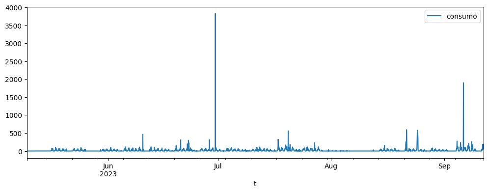
agua.resample('D').sum().plot(figsize=(12,4),kind='bar')<Axes: xlabel='t'>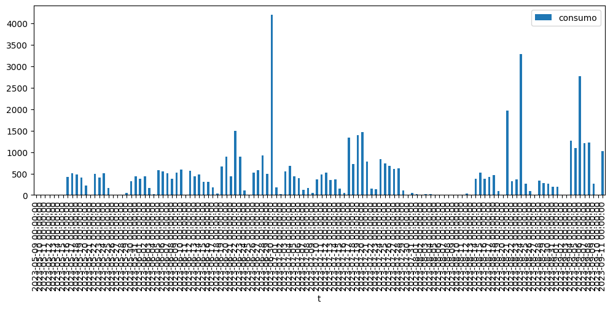
Prompt
'''
Tengo un dataframe llamado agua con un índice que es datetime con datos cada hora en una columna llamada consumo.
Quiero calcular el promedio de consumo de la serie temporal y luego detectar donde el consumo diario sea mayor al promedio diario de la serie temporal.
''''\nTengo un dataframe llamado agua con un índice que es datetime con datos cada hora en una columna llamada consumo.\n\n\nQuiero calcular el promedio de consumo de la serie temporal y luego detectar donde el consumo diario sea mayor al promedio diario de la serie temporal.\n'
# Asegúrate de que la columna de índice sea de tipo datetime
# agua.index = pd.to_datetime(agua.index)
# Calcular el promedio de consumo de la serie temporal
promedio_consumo = agua['consumo'].mean()
# Agrupar los datos por día y calcular el promedio diario de consumo
promedio_diario = agua['consumo'].resample('D').mean()
# Detectar dónde el consumo diario es mayor que el promedio diario
consumo_mayor_que_promedio = promedio_diario[promedio_diario > promedio_consumo]
# Imprimir el promedio de consumo y las fechas donde el consumo diario es mayor que el promedio
print("Promedio de consumo:", promedio_consumo)
print("Fechas con consumo diario mayor que el promedio:")
print(consumo_mayor_que_promedio)Promedio de consumo: 18.435921090090467
Fechas con consumo diario mayor que el promedio:
t
2023-05-17 21.430137
2023-05-18 19.695634
2023-05-22 20.279322
2023-05-24 21.140607
2023-06-05 24.211173
2023-06-06 23.215745
2023-06-07 20.976846
2023-06-09 21.874218
2023-06-10 24.459373
2023-06-12 23.283658
2023-06-14 20.151127
2023-06-19 27.541435
2023-06-20 37.408509
2023-06-22 62.463487
2023-06-23 37.514282
2023-06-26 21.572202
2023-06-27 24.365565
2023-06-28 38.258998
2023-06-29 20.813824
2023-06-30 175.094745
2023-07-03 22.752622
2023-07-04 28.075609
2023-07-11 19.875613
2023-07-12 21.944750
2023-07-17 55.733598
2023-07-18 30.307988
2023-07-19 57.962785
2023-07-20 61.349675
2023-07-21 32.510590
2023-07-24 34.727236
2023-07-25 30.435689
2023-07-26 28.239998
2023-07-27 25.276776
2023-07-28 26.177287
2023-08-15 21.477298
2023-08-18 19.465839
2023-08-21 82.065231
2023-08-24 137.084177
2023-09-04 52.781749
2023-09-05 45.496319
2023-09-06 115.593746
2023-09-07 50.616241
2023-09-08 51.234210
2023-09-11 54.013218
Name: consumo, dtype: float64Prompt
'''
que visualización me propones de la serie temporal para localizar los días con consumo diario mayor que el promedio ?
''''\nque visualización me propones de la serie temporal para localizar los días con consumo diario mayor que el promedio ? \n\n\n'# import matplotlib.pyplot as plt
# Crear un gráfico de líneas de consumo diario
plt.figure(figsize=(12, 6))
plt.plot(promedio_diario.index, promedio_diario.values, label='Consumo Diario')
plt.axhline(y=promedio_consumo, color='red', linestyle='--', label='Promedio Diario')
# Resaltar los días con consumo mayor que el promedio
plt.fill_between(promedio_diario.index, promedio_diario.values, where=promedio_diario > promedio_consumo, color='lightcoral', alpha=0.5, label='Días con Consumo Mayor')
# Configuración del gráfico
plt.xlabel('Fecha')
plt.ylabel('Consumo')
plt.title('Consumo Diario de Agua')
plt.legend()
plt.grid(True)
# Mostrar el gráfico
plt.show()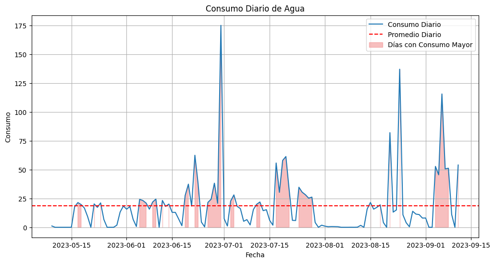
# import matplotlib.pyplot as plt
# Crear un gráfico de barras de consumo diario
plt.figure(figsize=(12, 6))
plt.bar(promedio_diario.index, promedio_diario.values, label='Consumo Diario', color='lightblue')
# Resaltar los días con consumo mayor que el promedio
plt.bar(promedio_diario.index[promedio_diario > promedio_consumo], promedio_diario[promedio_diario > promedio_consumo], color='salmon', label='Días con Consumo Mayor')
# Configuración del gráfico
plt.xlabel('Fecha')
plt.ylabel('Consumo')
plt.title('Consumo Diario de Agua')
plt.legend()
plt.grid(True)
# Mostrar el gráfico
plt.show()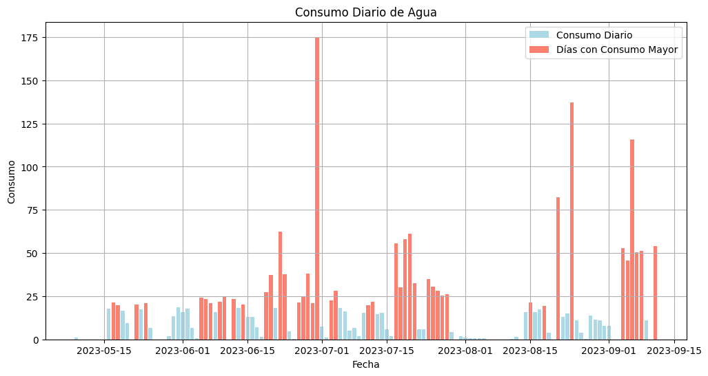
Prompt
'''
a la segunda gráfica le puedes agregar algo para hacer evidente el valor del promedio diario ?
''''\na la segunda gráfica le puedes agregar algo para hacer evidente el valor del promedio diario ? \n\n\n'# import matplotlib.pyplot as plt
# Crear un gráfico de barras de consumo diario
plt.figure(figsize=(12, 6))
plt.bar(promedio_diario.index, promedio_diario.values, label='Consumo Diario', color='lightblue')
# Resaltar los días con consumo mayor que el promedio
plt.bar(promedio_diario.index[promedio_diario > promedio_consumo], promedio_diario[promedio_diario > promedio_consumo], color='salmon', label='Días con Consumo Mayor')
# Agregar una línea horizontal para el promedio diario
plt.axhline(y=promedio_consumo, color='red', linestyle='--', label='Promedio Diario')
# Configuración del gráfico
plt.xlabel('Fecha')
plt.ylabel('Consumo')
plt.title('Consumo Diario de Agua')
plt.legend()
plt.grid(True)
# Mostrar el gráfico
plt.show()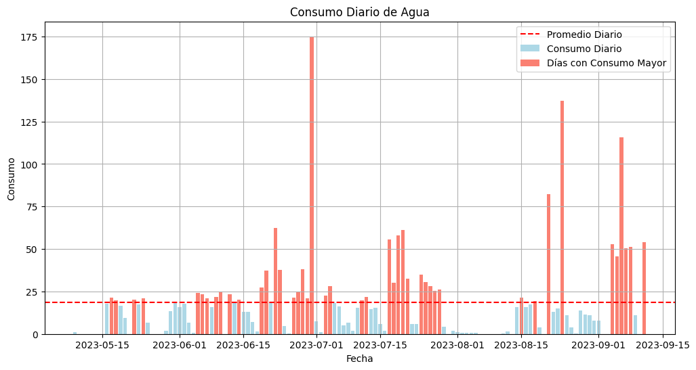
# import pandas as pd
# import matplotlib.pyplot as plt
# Asegúrate de que el índice del DataFrame sea de tipo datetime
agua.index = pd.to_datetime(agua.index)
# Calcular el promedio de consumo por día de la semana
promedio_por_dia_semana = agua['consumo'].groupby(agua.index.dayofweek).mean()
# Calcular el promedio diario de consumo
promedio_diario = agua['consumo'].resample('D').mean()
# Crear una serie para almacenar las fechas en que el consumo es mayor que el promedio por día de la semana
fechas_destacadas = []
# Iterar a través de los datos y detectar las fechas destacadas
for fecha, consumo in zip(promedio_diario.index, promedio_diario.values):
dia_semana = fecha.dayofweek
promedio_dia_semana = promedio_por_dia_semana[dia_semana]
if consumo > promedio_dia_semana:
fechas_destacadas.append(fecha)
# Crear un gráfico de barras de consumo diario
plt.figure(figsize=(12, 6))
plt.bar(promedio_diario.index, promedio_diario.values, label='Consumo Diario', color='lightblue')
# Resaltar las fechas en que el consumo diario es mayor que el promedio por día de la semana
plt.bar([fecha.date() for fecha in fechas_destacadas], [promedio_diario.loc[fecha] for fecha in fechas_destacadas], color='salmon', label='Días con Consumo Mayor')
# Configuración del gráfico
plt.xlabel('Fecha')
plt.ylabel('Consumo')
plt.title('Consumo Diario de Agua')
plt.legend()
plt.grid(True)
# Mostrar el gráfico
plt.show()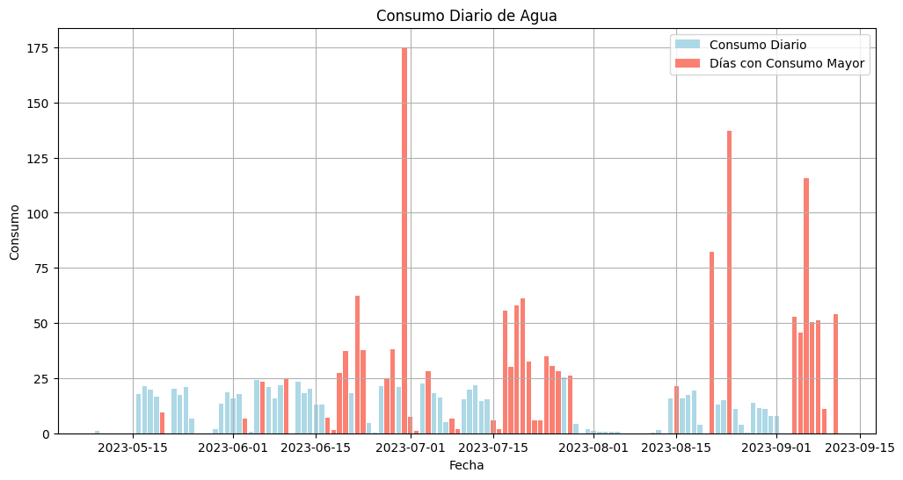
Prompt
'''
Me puedes recomendar diez sugerencias para analizar comportamientos anómalos para consumo de agua. Considera el dataframe agua con consumos cada hora.
''''\nMe puedes recomendar diez sugerencias para analizar comportamientos anómalos para consumo de agua. Considera el dataframe agua con consumos cada hora.\n\n'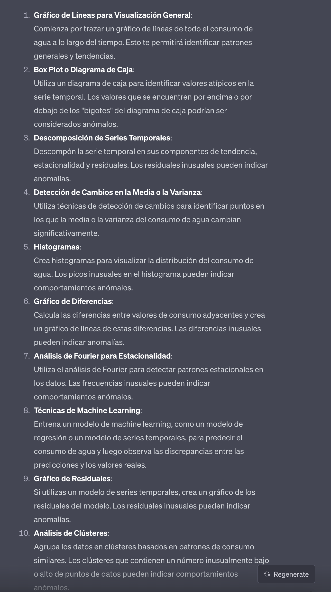
Tomo la opci’on de boxplot
consumo_diario = agua['consumo'].resample('D').sum()
# import matplotlib.pyplot as plt
plt.figure(figsize=(10, 6))
plt.boxplot(consumo_diario, vert=False)
plt.title('Diagrama de Caja del Consumo Diario de Agua')
plt.xlabel('Consumo Diario')
plt.show()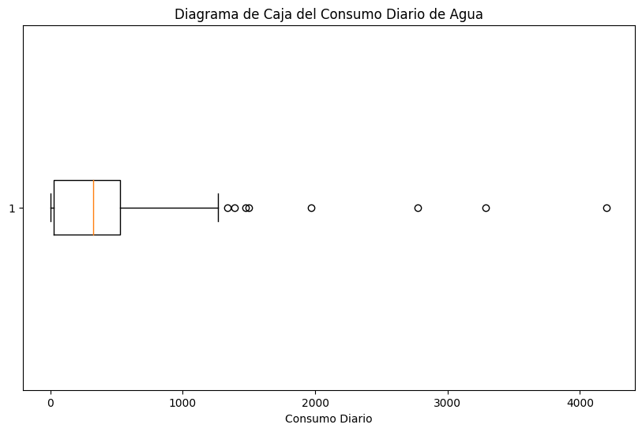
Prompt
'''
alrededor de 8 puntos quedaron fuera de los bigotes, como identifico esos días de mi serie temporal ?
''''\nalrededor de 8 puntos quedaron fuera de los bigotes, como identifico esos días de mi serie temporal ? \n\n'
# Crear el diagrama de caja y obtener los valores atípicos
boxplot = plt.boxplot(consumo_diario, vert=False)
valores_atipicos = [flier.get_xdata() for flier in boxplot['fliers']]
# Identificar los días correspondientes a los valores atípicos
dias_atipicos = []
for valor_atipico in valores_atipicos:
for i, consumo_dia in enumerate(consumo_diario):
if consumo_dia in valor_atipico:
dia_atipico = consumo_diario.index[i].strftime('%Y-%m-%d')
dias_atipicos.append(dia_atipico)
print("Días con valores atípicos:")
for dia in dias_atipicos:
print(dia)Días con valores atípicos:
2023-06-22
2023-06-30
2023-07-17
2023-07-19
2023-07-20
2023-08-21
2023-08-24
2023-09-06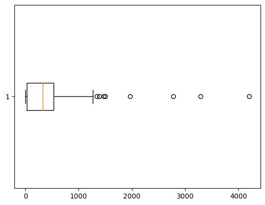
Prompt
'''
ayudame a graficar esos días en una grafica de consumo diario usando barras e incluye el umbral con una línea roja el valor donde el consumo diario comienza a considerarse atípico de acuerdo a la boxplot.
''''\nayudame a graficar esos días en una grafica de consumo diario usando barras e incluye el umbral con una línea roja el valor donde el consumo diario comienza a considerarse atípico de acuerdo a la boxplot.\n\n\n'# import matplotlib.pyplot as plt
# import numpy as np
# Crear la gráfica de barras del consumo diario
plt.figure(figsize=(12, 6))
plt.bar(consumo_diario.index, consumo_diario, label='Consumo Diario', color='lightblue')
# Identificar el umbral de valores atípicos según el boxplot
umbral_atipico = np.percentile(consumo_diario, 75) + 1.5 * (np.percentile(consumo_diario, 75) - np.percentile(consumo_diario, 25))
# Agregar una línea roja para el umbral de valores atípicos
plt.axhline(y=umbral_atipico, color='red', linestyle='--', label='Umbral de Valores Atípicos')
# Identificar y marcar los días con valores atípicos
dias_atipicos_indices = [consumo_diario.index.get_loc(dia) for dia in dias_atipicos]
plt.bar([consumo_diario.index[i] for i in dias_atipicos_indices], [consumo_diario[i] for i in dias_atipicos_indices], color='salmon', label='Días Atípicos')
# Configuración del gráfico
plt.xlabel('Fecha')
plt.ylabel('Consumo')
plt.title('Consumo Diario de Agua con Valores Atípicos')
plt.legend()
plt.grid(True)
# Mostrar el gráfico
plt.show()/var/folders/5r/jn_g7h3n0pv3v9fbjgr05h8w0000gn/T/ipykernel_90805/2638497985.py:16: FutureWarning: Series.__getitem__ treating keys as positions is deprecated. In a future version, integer keys will always be treated as labels (consistent with DataFrame behavior). To access a value by position, use `ser.iloc[pos]`
plt.bar([consumo_diario.index[i] for i in dias_atipicos_indices], [consumo_diario[i] for i in dias_atipicos_indices], color='salmon', label='Días Atípicos')Prompt
'''
Ahora explicame como sería detectar anomalias usando histogramas
''''\nAhora explicame como sería detectar anomalias usando histogramas\n'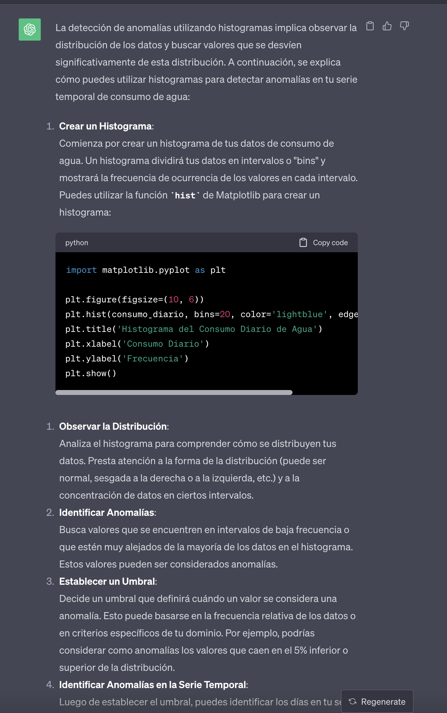
import matplotlib.pyplot as plt
plt.figure(figsize=(10, 6))
plt.hist(consumo_diario, bins=20, color='lightblue', edgecolor='black')
plt.title('Histograma del Consumo Diario de Agua')
plt.xlabel('Consumo Diario')
plt.ylabel('Frecuencia')
plt.show()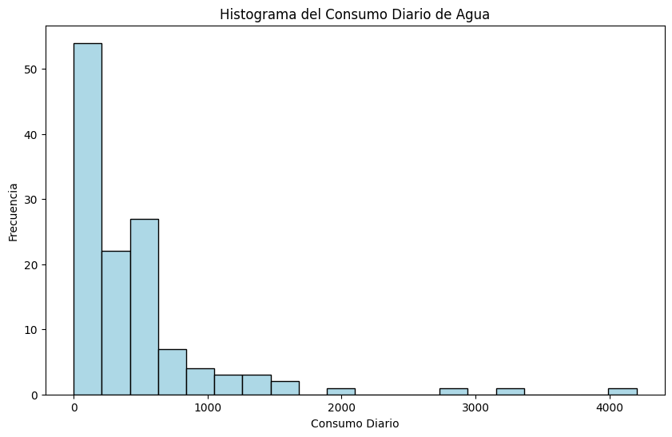
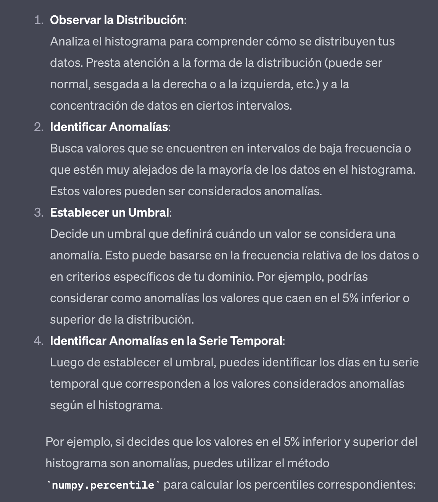
percentil_inferior = np.percentile(consumo_diario, 5)
percentil_superior = np.percentile(consumo_diario, 95)
# Identificar días con anomalías
dias_anomalos = consumo_diario[(consumo_diario < percentil_inferior) | (consumo_diario > percentil_superior)].indexdias_anomalosDatetimeIndex(['2023-06-22', '2023-06-30', '2023-07-19', '2023-07-20',
'2023-08-21', '2023-08-24', '2023-09-06'],
dtype='datetime64[ns]', name='t', freq=None)Prompt
'''
ayudame a visualizar estos días anomalos dentro de la serie de datos del consumo diario.
''''\nayudame a visualizar estos días anomalos dentro de la serie de datos del consumo diario.\n\n'# import matplotlib.pyplot as plt
# Crear una gráfica de barras del consumo diario de agua
plt.figure(figsize=(12, 6))
plt.bar(consumo_diario.index, consumo_diario, label='Consumo Diario', color='lightblue')
# Identificar los días anómalos y marcarlos en rojo
dias_anomalos_indices = [consumo_diario.index.get_loc(dia) for dia in dias_anomalos]
plt.bar([consumo_diario.index[i] for i in dias_anomalos_indices], [consumo_diario[i] for i in dias_anomalos_indices], color='red', label='Días Anómalos')
# Configuración del gráfico
plt.xlabel('Fecha')
plt.ylabel('Consumo')
plt.title('Consumo Diario de Agua con Días Anómalos')
plt.legend()
plt.grid(True)
# Mostrar el gráfico
plt.show()/var/folders/5r/jn_g7h3n0pv3v9fbjgr05h8w0000gn/T/ipykernel_90805/2757504083.py:9: FutureWarning: Series.__getitem__ treating keys as positions is deprecated. In a future version, integer keys will always be treated as labels (consistent with DataFrame behavior). To access a value by position, use `ser.iloc[pos]`
plt.bar([consumo_diario.index[i] for i in dias_anomalos_indices], [consumo_diario[i] for i in dias_anomalos_indices], color='red', label='Días Anómalos')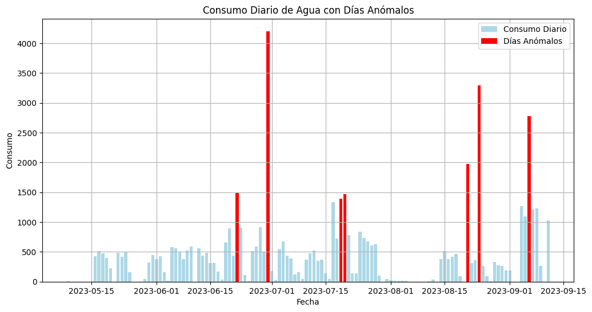
Comparación de días anómalos con histogramas y boxplot
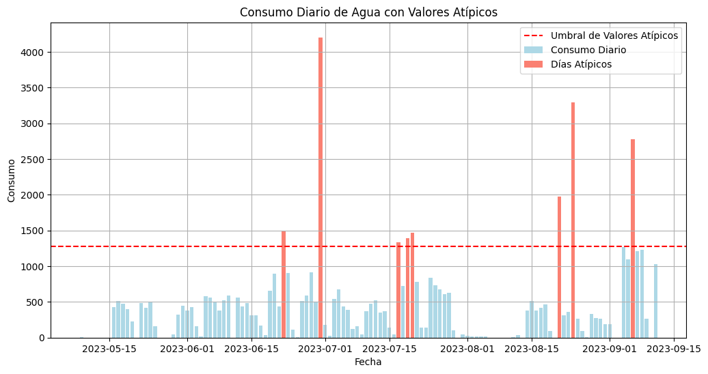